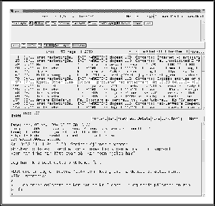

Det finnes et vell av programmer for å bruke elektronisk post i dag. Det som først og fremst skiller de enkelte programmene fra hverandre, er:
Noen programmer finnes bare for noen maskintyper, f.eks. Macintosh, PC/Windows eller UNIX.
Denne egenskapen er meget viktig. Har bedriften koplinger til et WAN , f.eks. Internet, vil det være ønskelig at bedriftens interne
postsystem kan utveksle post transparent med postsystemer utenfor bedriften.
, f.eks. Internet, vil det være ønskelig at bedriftens interne
postsystem kan utveksle post transparent med postsystemer utenfor bedriften.

Det er ikke bare lyd og bilde som faller innenfor denne kategorien, men også dokumenter fra tekstbehandlere som f.eks. Word og WordPerfect. Postprogrammene omtaler gjerne slike tillegg som vedlegg eller ``attachments''. Og selv om et program har mulighet for å sende vedlegg på et eller annet format, må dessuten postombæringssystemet ha mulighet til å transportere dette og selvsagt mottakeren mulighet til å ta det i mot. Det er ikke alltid dette er tilfelle, og derfor eksisterer det en jungel av produkter og systemer som er delvis inkompatible.
Figur  viser et eksempel på postsystemet MH under UNIX.
viser et eksempel på postsystemet MH under UNIX.